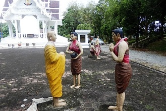
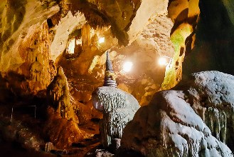

Phuket
Cidade com boa infra estrutura turística, praias e ilhas paradisíacas. Uma passagem por ela é "obrigatória" para qualquer turista na Tailândia. Bom, pelo menos era quando o acesso à Maya Bay estava liberado, mas ainda assim continua sendo uma ótima opção.As 3 principais praias da cidade são Patong, Karon e Kata (dividida em Kata e Kata Noi).
Na rua Ranong, em frente ao mercado, há uma estação de ônibus com linhas para várias praias. O ônibus para Kata ou Karon custa cerca de ฿$ 30 e o trajeto leva uns 45 minutos. Não há ônibus entre as praias de Patong e Kata ou Karon. Mas você pode pegar um tuk-tuk. Para ir ao centro de Phuket desde Patong, pegue um ônibus, que custa cerca de ฿$ 25 e leva 30 minutos.
Nas praias, alguns moradores locais podem te dizer que não há nada para se fazer na parte mais urbana da cidade. Mas será que eles não estão apenas interessados que você (e seu dinheiro, é claro) fique na praia?
A cidade de Phuket tem alguns prédios em arquitetura sino-portuguesa que são incomuns na Tailândia, por isso vale a pena dar uma passada na área central da cidade também.
Sobre as tours de botes, em Patong, você pode marcar seu pacote para o próximo dia em uma das várias agências espalhadas na área, mas lembre-se que muitas vezes elas praticam preços diferentes, então pesquise e barganhe bastante, pois o preço padrão de ฿$ 2.800 facilmente cai para uns ฿$ 2.200 com uma boa pechincha.
Como chegar à Phuket
* De avião: o aeroporto internacional de Phuket (IATA: HKT, ICAO: VTSP), o 2º mais movimentado do país, fica na parte norte da ilha. Há voos frequentes desde/para Bangcoc, além de voos diretos desde/para outras localidades internacionais, como Cingapura, Kuala Lumpur (Malásia), e até para a Europa e a Austrália durante a alta temporada. Várias empresas locais fazem a linha Bangcoc-Phuket, entre elas a Nok Air, a Air Asia, e a Orient Thai. Passagens de qualquer um dos aeroportos de Bangcoc custam em média ฿$ 1.500 (apenas ida) se compradas com boa antecedência, ou cerca de ฿$ 2.000-2.700 (incluindo as taxas) se compradas no dia do voo.* De trem/ônibus: não há serviços de trens para Phuket, mas vários trens saem de Bangcoc em direção ao Sul, seguindo até Cingapura. O que dá pra fazer é pegar um trem até a Phun Phin Railway Station próxima à Surat Thani e de lá seguir mais 5 horas de ônibus até Phuket.
* De ônibus: os ônibus para os destinos principais como Bangcoc, Chumphon, Hat Yai, Krabi, Phang Nga, Ranong, Satun e Surat Thani usam o antigo Terminal BKS próximo à Thanon Phang Nga em Phuket Town. Saindo de Bancoc, os ônibus mais confiáveis são os BKS (públicos) que saem do terminal Sul em direção a Phuket. A viagem leva 13 horas e custa entre ฿$ 700 e 1.000. Há algumas empresas privadas, como a Phuket Travel Tour, a Phuket Central Tour e a Phuket Travel Service. Os serviços oferecidos na Khao San Road têm uma má reputação de roubos e transferências para micrôonibus em Surat Thani. É melhor evitar esses serviços. O escritório da Tourism Authority of Thailand oferece um ônibus saindo de perto da estação de trem Hua Lamphong às 19:00 por ฿$ 1.200. Ao chegar na rodoviária de Phuket, você pode pegar um mototáxi, tuk-tuk ou ônibus. Uma corrida de mototáxi para as praias custa em média ฿$ 120 e 240 (negociáveis). Um ônibus local para alguma das praias princiais custa entre ฿$ 15 e 40. Não é raro os motoristas de tuk-tuk da rodoviárias dizerem aos turistas que o serviço dos ônibus parou, embora ainda estejam funcionadno. O ponto de ônibuis é próximo ao mercado na cidade antiga. Saindo da rodoviária, vire à direita na rua Phang Nga e continue nessa rua até ela terminar na rua Yaowarat. E aí vire à esquerda. Siga alguns metros e você verá uma rotatória. Quando chegar nela, pegue à direita, até a rua Ranong. Dentro de uns 200m você encontra o terminal local. Há 2 terminais em Phuket, um pequeno e velho, na cidade, e um grande e moderno, há 4km ao norte da cidade. Você pode pegar um songthaew rosa por ฿$ 10 (saem a cada 30 minutos) entre as 2 rodoviárias. Há 3 linhas regulares de songthaews na cidade, e ambos os terminais são servidos por elas. O último songthaew sai às 19:00.
Se locomovendo pela cidade
Como a ilha é grande, você vai precisar de algum transporte para conhecê-la. O transporte público é bem limitado, e táxis e tuk-tuks são as melhores opções. Sobre o transporte público, há uns poucos ônibus, e a maioria das linhas é feita com songthaews. A passagem custa entre ฿$ 25 e 40, dependendo da distância. Não há pontos de paradas definidos. Eles te pegam e param conforme o seu pedido.A maioria dos ônibus locais opera em intervalos de 30 minutos e param às 18:00. A maioria sai do mercado local na rua Ranongd (Talad Sod ou Ban San). Os que vão para as praias principais vão através do terminal de Phuket Town. As linhas princiapais ligam a Patong, Kata-Karon, Chalong Bay, Rawai-Nai Han Beach, Cape Panwa (onde está o aquário), Mai Khao e Surin-Kamala.
Cuidado pois no retorno o ônibus pode parar não no terminal, mas em um ponto qualquer no meio da cidade, onde taxistas e motoristas de tuk-tuk esperam anciosos por turistas que aceitem seus preços abusivos.
Existem 3 tipos de táxis na cidade: pequenas minivans em estilo de songthaew (geralmente vermelhas, ocasionalmente amarelas), que também são chamadas de tuk-tuks, embora tenham 4 rodas, um número muito pequeno de táxis convencionais (amarelos e vermelhos e com uma placa "Taxi-Meter" no teto) e os mototáxis.
Os tuk-tuks não tem taxímetro, e seus motoristas são geralmente mercenários, portanto sempre acerte o preço antes, e sempre pechinche. Pequenas corridas na cidade não devem custar mais de ฿$ 40.
Os tuk-tuks devem ser evitados, são controlados pelo que os locais chamam de "Máfia Tailandesa", e cobram ฿$ 200 por menos de 1km. Os táxis são uma opção muito melhor; são mais seguros, mais confortáveis e geralmente mais baratos. Os mototáxis são mais baratos, mas menos seguros. Nunca suba na moto de qualquer um que ofecer o serviço. Os mototaxistas credenciados vestem coletes numerados.
As atrações de Phuket
Phuket Aquarium
Koh Phi Phi

Parque Marinho Nacional Similan
Praia de Patong (Patong Beach)
Principal praia de Phuket, com uma faixa de areia longa e curvada. Fica há aproximadamente 9km à oeste do centro da cidade e tem cerca de 3km de extensão. Ao lado
da praia, está a principal via de tráfego local, e nela, os principais hotéis e várias lojas e restaurantes, além das placas de aviso para evacuação em caso de
tsunami (a praia foi uma das mais atingidas pela tragédia de 2004, e onde todos os anos, no dia 26/12 ocorre uma homenagem às vítimas).
Como esta é a praia mais badalada de Phuket, os preços são mais altos do que os praticados em outras praias. A praia tem também uma vida noturna bastante agitada, com neons pra todos os lados, danceterias, garotas "suspeitas" em cada esquina, caminhões com lutadores de Muay Thai, etc.
Se estiver a fim de ver umas lutas, você pode ir ao Patong Boxing Stadium. Os ingressos podem ser comprados no local ou nas agências de turismo. O ginásio fica próximo ao Patong Hospital e da Patong Police Station, 2/59 Soi Kebsap Road Paton, Kathu.
Uma parte muito famosa (e infame) da praia é a Bangla Road, conhecida por seus clubes, boates e garotas de programa. Não se engane na soi Crocodile, que é conhecido ponto de encontro de ladyboys (ou kathoeys, que é como transexuais são conhecidos na Tailândia).
Embora seja muito famosa, Patong não é tão atraente, pelo menos em beleza, quanto as praias de Krabi ou Kata.
Como esta é a praia mais badalada de Phuket, os preços são mais altos do que os praticados em outras praias. A praia tem também uma vida noturna bastante agitada, com neons pra todos os lados, danceterias, garotas "suspeitas" em cada esquina, caminhões com lutadores de Muay Thai, etc.
Se estiver a fim de ver umas lutas, você pode ir ao Patong Boxing Stadium. Os ingressos podem ser comprados no local ou nas agências de turismo. O ginásio fica próximo ao Patong Hospital e da Patong Police Station, 2/59 Soi Kebsap Road Paton, Kathu.
Uma parte muito famosa (e infame) da praia é a Bangla Road, conhecida por seus clubes, boates e garotas de programa. Não se engane na soi Crocodile, que é conhecido ponto de encontro de ladyboys (ou kathoeys, que é como transexuais são conhecidos na Tailândia).
Embora seja muito famosa, Patong não é tão atraente, pelo menos em beleza, quanto as praias de Krabi ou Kata.

Local: distrito de Kathu, Mueang Phuket.
Voltar à lista
Phuket Fantasea
Parque temático sobre a mitologia tailandesa, medindo 140 acres e que custou U$ 20 milhões para ser construído.
Possui várias atividades de entretenimento, com festividades, jogos, artesanato e lojas.
Logo na entrada você é recebido por pessoas em coloridos e brilhantes trajes típicos tailandeses. Isso, e os belos elefantes dourados nas colunas e a arte maravilhosa no teto é o que você verá por primeiro, antes de sequer entrar no parque!
Dentro você verá estátuas de espíritos e seres mitológicos da cultura tailandesa. Não perca o Hanuman's Lair! Todo iluminado em luz negra, tudo brilha no escuro, incluindo os baiacus e os tubarões.
A principal atração para a maioria dos turistas é o show Fantasy of a Kingdom, com elefantes, patos, pássaros, bois, cabras e macacos. A apresentação retrata a história da Tailândia com humor, fogos, acrobacias e danças. O Golden Kinnaree Buffet Restaurant tem 4.000 assentos com um buffet de comida tailandesa e internacional, além de ótimas sobremesas.
Durante o show não são permitidas fotos ou gravação de vídeos. Sua câmera fica guardada e você recebe um número para retirá-la após o show.
Enquanto você espera pelo show, você pode se entreter com apresentações de danças típicas, música tradicional tailandesa, mini apresentações, passeios de elefante, fotos com tigres, etc.
Não pague pelo passeio de elefante antes do show! Se você só quer tirar uma foto com eles, espere até o show acabar, quando eles trazem os menores e você pode tirar fotos com eles.
Importante!. De fato é uma atração interessante, sobretudo pela intrudução à cultura tailandesa, mas é importante ressaltar a importância de se evitar atrações turísticas que utilizem animais. Os treinamentos desses animais podem ser exaustivos e estressantes para eles, assim como as apresentações. Ao financiar tais práticas com o seu ingresso, você incentiva tais atrações a continuarem. Se você quer mesmo visitar o local pela parte cultural, mas se pergunta se deveria ou não ver as apresentações com animais, apenas não pague pelas atrações que utilizem animais, mas caso elas estejam inclusas no preço, você pode escolher entre vê-las ou não.
Possui várias atividades de entretenimento, com festividades, jogos, artesanato e lojas.
Logo na entrada você é recebido por pessoas em coloridos e brilhantes trajes típicos tailandeses. Isso, e os belos elefantes dourados nas colunas e a arte maravilhosa no teto é o que você verá por primeiro, antes de sequer entrar no parque!
Dentro você verá estátuas de espíritos e seres mitológicos da cultura tailandesa. Não perca o Hanuman's Lair! Todo iluminado em luz negra, tudo brilha no escuro, incluindo os baiacus e os tubarões.
A principal atração para a maioria dos turistas é o show Fantasy of a Kingdom, com elefantes, patos, pássaros, bois, cabras e macacos. A apresentação retrata a história da Tailândia com humor, fogos, acrobacias e danças. O Golden Kinnaree Buffet Restaurant tem 4.000 assentos com um buffet de comida tailandesa e internacional, além de ótimas sobremesas.
Durante o show não são permitidas fotos ou gravação de vídeos. Sua câmera fica guardada e você recebe um número para retirá-la após o show.
Enquanto você espera pelo show, você pode se entreter com apresentações de danças típicas, música tradicional tailandesa, mini apresentações, passeios de elefante, fotos com tigres, etc.
Não pague pelo passeio de elefante antes do show! Se você só quer tirar uma foto com eles, espere até o show acabar, quando eles trazem os menores e você pode tirar fotos com eles.
Importante!. De fato é uma atração interessante, sobretudo pela intrudução à cultura tailandesa, mas é importante ressaltar a importância de se evitar atrações turísticas que utilizem animais. Os treinamentos desses animais podem ser exaustivos e estressantes para eles, assim como as apresentações. Ao financiar tais práticas com o seu ingresso, você incentiva tais atrações a continuarem. Se você quer mesmo visitar o local pela parte cultural, mas se pergunta se deveria ou não ver as apresentações com animais, apenas não pague pelas atrações que utilizem animais, mas caso elas estejam inclusas no preço, você pode escolher entre vê-las ou não.
Local: 99 Moo 3, Kamala Kathu.
Entrada: ฿$ 1.500 (só o show) ou ฿$ 1.900 (jantar incluso).
Horário: o parque abre às 17:30, o show começa às 21:00 e dura 1h e meia.
Site: www.phuket-fantasea.com.
Voltar à lista
Entrada: ฿$ 1.500 (só o show) ou ฿$ 1.900 (jantar incluso).
Horário: o parque abre às 17:30, o show começa às 21:00 e dura 1h e meia.
Site: www.phuket-fantasea.com.
Wat Chalong (ou Chaitararam)
Maior e mais importante templo dentre os 29 templos da região de Phuket Town.
Fica há 8km da cidade e é conhecido pelas estátuas dos monges Luang Pro Chaem e Luang Por Chuang, que são bastante reverenciados por suas habilidades em curar as pessoas com ervas medicinais.
Em 1876 eles levaram a população de Phuket a lutar contra o grande fluxo de imigrantes chineses que chegou tomando conta de tudo, até que o governo enviou tropas para expulsá-los. Depois disso, o rei concedeu à Luang Po Chaem o título eclesiástico de Phra Kru Wisit Wongsacharn.
O templo abriga também uma imagem de Luang Por Gluam e um dente de Buda que veio do Sri Lanka em 1999.
Você o encontra dentro de uma redoma de vidro sobre uma base de mármore em forma de flor de lótus.
Como o templo ainda está ativo, você deve se vestir e se portar apropriadamente para entrar, ou seja: nada de ombros, barriga ou pernas à mostra, retire seu calçado antes de entrar, não tire fotos com as imagens, não fale alto e seja respeitoso.
Fica há 8km da cidade e é conhecido pelas estátuas dos monges Luang Pro Chaem e Luang Por Chuang, que são bastante reverenciados por suas habilidades em curar as pessoas com ervas medicinais.
Em 1876 eles levaram a população de Phuket a lutar contra o grande fluxo de imigrantes chineses que chegou tomando conta de tudo, até que o governo enviou tropas para expulsá-los. Depois disso, o rei concedeu à Luang Po Chaem o título eclesiástico de Phra Kru Wisit Wongsacharn.
O templo abriga também uma imagem de Luang Por Gluam e um dente de Buda que veio do Sri Lanka em 1999.
Você o encontra dentro de uma redoma de vidro sobre uma base de mármore em forma de flor de lótus.
Como o templo ainda está ativo, você deve se vestir e se portar apropriadamente para entrar, ou seja: nada de ombros, barriga ou pernas à mostra, retire seu calçado antes de entrar, não tire fotos com as imagens, não fale alto e seja respeitoso.
Local: rua Chaofa 42, distrito de Chalong, Mueang Phuket.
Entrada: gratuita, mas você pode fazer uma doação.
Horário: diariamente das 7:00 às 18:00.
Voltar à lista
Entrada: gratuita, mas você pode fazer uma doação.
Horário: diariamente das 7:00 às 18:00.
Kata Yai / Kata Noi
Duas belas praias ao sul de Karon.
Saindo de Karon, a pé, você leva menos de 10 minutos para chegar à Kata Yai e menos de 15 minutos para chegar à Kata Noi.
Ambas são mais frequentadas por famílias e pessoas de idade do que por mochileiros.
Kata Yai, a maior, fica há uns 25 minutos de Patong e uns 50 minutos de Phuket Town, e é uma das mais belas da ilha. É uma pequena baia, com pouco mais de 1km, cercada por montanhas verdes.
Embora a praia seja pública, é dominada pelo Club Med Resort, que detém praticamente todas as terras da praia.
Não lembra em quase nada o agito de Patong, possuindo um bom equilíbrio, com um pouco de vida noturna e boas instalações combinadas à uma atmosfera de relaxamento e muita beleza natural.
Mais ao sul está Kata Noi, outra baía muito bonita. Assim como em Kata Yai, é uma ótima opção para famílias e idosos, com bons pontos de mergulho e água geralmente calma.
Saindo de Karon, a pé, você leva menos de 10 minutos para chegar à Kata Yai e menos de 15 minutos para chegar à Kata Noi.
Ambas são mais frequentadas por famílias e pessoas de idade do que por mochileiros.
Kata Yai, a maior, fica há uns 25 minutos de Patong e uns 50 minutos de Phuket Town, e é uma das mais belas da ilha. É uma pequena baia, com pouco mais de 1km, cercada por montanhas verdes.
Embora a praia seja pública, é dominada pelo Club Med Resort, que detém praticamente todas as terras da praia.
Não lembra em quase nada o agito de Patong, possuindo um bom equilíbrio, com um pouco de vida noturna e boas instalações combinadas à uma atmosfera de relaxamento e muita beleza natural.
Mais ao sul está Kata Noi, outra baía muito bonita. Assim como em Kata Yai, é uma ótima opção para famílias e idosos, com bons pontos de mergulho e água geralmente calma.
Ponto de observação de Kata View
Pode ser acessado seguindo ao sul através de uma estrada bem pavimentada, que liga Kata à Hat Nai Harn, a
mesma que leva ao Cabo Promthep.
Um pavilhão ao lado da estrada marca o local do mirante. Em um dia claro, a vista das baías de Kata Noi e Kata Yai, da Praia de Karon e de Koh Pu são maravilhosas, isso sem falar dos maravilhosos nascer e por do sol com seus fortes tons alaranjados, considerado um dos mais belos da Ásia.
Um pavilhão ao lado da estrada marca o local do mirante. Em um dia claro, a vista das baías de Kata Noi e Kata Yai, da Praia de Karon e de Koh Pu são maravilhosas, isso sem falar dos maravilhosos nascer e por do sol com seus fortes tons alaranjados, considerado um dos mais belos da Ásia.
Wat Suwan Khirikhet
Templo no alto de um morro de 380m, com uma grande imagem de Buda medindo 45m de altura e 24,5m de largura, chamado Phra Buddha Mingmongkhol Ake Nagakhiri.
A imagem foi construída não apenas para guardar a ilha e para representar as 3 joias de Buda, do dhamma (ensinamento) e do sangha (monge), mas também para homenagear o rei Bhumibol em seu 80º aniversário.
A imagem maior é vista a quilômetros de distância, e foi revestida em 135 toneladas de mármore branco doados pela Birmânia.
Há uma imagem menor, dedicada à rainha Sirikit. Ela mede 5,49m de largura e 12,49m de altura e pesa 22 toneladas.
As vistas do alto do morro são ótimas.
A imagem foi construída não apenas para guardar a ilha e para representar as 3 joias de Buda, do dhamma (ensinamento) e do sangha (monge), mas também para homenagear o rei Bhumibol em seu 80º aniversário.
A imagem maior é vista a quilômetros de distância, e foi revestida em 135 toneladas de mármore branco doados pela Birmânia.
Há uma imagem menor, dedicada à rainha Sirikit. Ela mede 5,49m de largura e 12,49m de altura e pesa 22 toneladas.
As vistas do alto do morro são ótimas.
Local: Nakkerd Hill, próximo à Chalong.
Voltar à lista
Praia de Karon
Segunda maior praia de Phuket, 7km ao sul de Patong, possui areia fina e branca e água limpa. A praia é bem mais bonita, limpa, e
muito menos movimentada e visitada do que Patong, mas ainda assim você encontra bons restaurantes, vários albergues e lojas.
Atenção quando entrar na água, pois foram relatados algums incidentes com águas vivas!
Atenção quando entrar na água, pois foram relatados algums incidentes com águas vivas!
Praia de Rawai
Praia próxima ao Laem Prom Thep Cape, à sudoeste da ilha. As praias do lado oeste não chegam nem perto do nível das praias do leste,
e Rawai não é excessão, mas por sua proximidade de Phuket Town, é popular entre os locais.
Há bastante restaurantes de frutos do mar ao longo da Beach Road, com autêntica comida tailandesa a preços baixos.
Há bastante restaurantes de frutos do mar ao longo da Beach Road, com autêntica comida tailandesa a preços baixos.
Local: distrito de Rawai, Mueang Phuket.
Voltar à lista
Koh Racha Yai
Ilha pequena, formada pelas praias de Konkare, Siam e Ter Bay, à uns 16km ao sul
do Cabo Mae Prom Thep.
A maior parte da ilha é coberta por uma floresta.
Caminhando pela ilha você encontra ótimos pontos de mergulho e há uma relativa infra estrutura com restaurantes, bares e opções de hospedagem.
A maior parte da ilha é coberta por uma floresta.
Caminhando pela ilha você encontra ótimos pontos de mergulho e há uma relativa infra estrutura com restaurantes, bares e opções de hospedagem.
Khao Rang
A vista de Phuket Town desde o morro é incrível. Há um parque de exercícios no alto e uma estátua do primeiro governante famoso de Phuket, Ratsada Korsimbi Na
Ranong. Há também vários restaurantes, e a vista da cidade iluminada à noite vale o jantar em algum deles.
Local: distrito de Wichit, Mueang Phuket.
Voltar à lista
Phuket Aquarium
Principal aquário da cidade, que passou por grandes reformas ao longo dos anos.
Um dos destaques é um túnel de 10m no meio da água. O aquário em si não é muito grande, mas você pode levar até 1 hora olhando tudo o que ele tem à oferecer.
Se você se interessa por mergulho, uma visita ao aquário te dará uma boa introdução sobre a vida marinha presente no litoral da região.
O maior centro de pesquisa da vida marinha do país se encontra no complexo do aquário, e realiza pesquisas sobre ecossistemas de corais tropicais, pescaria comercial e outros projetos.
O aquário ainda cria espécies de tartarugas marinhas para soltá-las no mar.
Um dos destaques é um túnel de 10m no meio da água. O aquário em si não é muito grande, mas você pode levar até 1 hora olhando tudo o que ele tem à oferecer.
Se você se interessa por mergulho, uma visita ao aquário te dará uma boa introdução sobre a vida marinha presente no litoral da região.
O maior centro de pesquisa da vida marinha do país se encontra no complexo do aquário, e realiza pesquisas sobre ecossistemas de corais tropicais, pescaria comercial e outros projetos.
O aquário ainda cria espécies de tartarugas marinhas para soltá-las no mar.
Local: próximo à extremidade sul da cidade, e a Ao Makham no Cabo Panwa. Um taxi
de Patong levará cerca de 1h para chegar. Não espere pagar menos do que ฿$ 1.000 pela ida e volta.
Horário: diariamente das 8:00 às 16:00.
Entrada: ฿$ 100 (adultos) ou ฿$ 50 (crianças).
Voltar à lista
Horário: diariamente das 8:00 às 16:00.
Entrada: ฿$ 100 (adultos) ou ฿$ 50 (crianças).
Cabo Laem Prom Thep
Localizado no ponto mais ao sul da ilha de Phuket, entre as praias de Rawai e Nai Harn, é um ótimo ponto de
observação de onde você pode ter uma bela vista panorâmica de Kata Yai, Kata Noi e
Karon. No final da tarde você vê vários turistas no local, todos esperando pelo belíssimo pôr do sol. E onde há turistas, há barraquinhas
vendendo souvenirs e comida.
No local você encontra o monumento ao Príncipe de Jumborn, que em 1880 estava na marinha. Ele foi o 28º filho do rei Rama V. Aos 13 anos se tornou cadete naval na Inglaterra. Ele voltou à Tailândia 6 anos mais tarde e construiu a primeira base militar de Phuket.
Você encontra também um santuário budista onde há centenas de imagens de elefantes de madeira e um santuário hindu dedicado à Brahma, que dá nome ao local, já que em tailandês Phrom = Brahma e Thep = anjo.
Alguns moradores locais se referem ao local como Laem Chao, ou Cabo de Deus.
Para uma vista ainda melhor, suba as escadas para as plataformas da Kanchanaphisek (Golden Jubilee Lighthouse ou Farol do Jubileu Dourado). O farol contém também um pequeno museu náutico.
Lembre-se de que se você visitar o local na época das chuvas, dificilmente terá a oportunidade de ver o nascer ou o pôr do sol. Lembre-se também de que o caminho pode ficar congestionado e o estacionamento do local pode estar lotado, então o ideal é chegar por volta das 17:00 e garantir seu lugar.
Atenção também aos cães de rua que perambulam pelo caminho.
No local você encontra o monumento ao Príncipe de Jumborn, que em 1880 estava na marinha. Ele foi o 28º filho do rei Rama V. Aos 13 anos se tornou cadete naval na Inglaterra. Ele voltou à Tailândia 6 anos mais tarde e construiu a primeira base militar de Phuket.
Você encontra também um santuário budista onde há centenas de imagens de elefantes de madeira e um santuário hindu dedicado à Brahma, que dá nome ao local, já que em tailandês Phrom = Brahma e Thep = anjo.
Alguns moradores locais se referem ao local como Laem Chao, ou Cabo de Deus.
Para uma vista ainda melhor, suba as escadas para as plataformas da Kanchanaphisek (Golden Jubilee Lighthouse ou Farol do Jubileu Dourado). O farol contém também um pequeno museu náutico.
Lembre-se de que se você visitar o local na época das chuvas, dificilmente terá a oportunidade de ver o nascer ou o pôr do sol. Lembre-se também de que o caminho pode ficar congestionado e o estacionamento do local pode estar lotado, então o ideal é chegar por volta das 17:00 e garantir seu lugar.
Atenção também aos cães de rua que perambulam pelo caminho.
Local: distrito de Rawai, Mueang Phuket.
Voltar à lista
Reserva Florestal Real de Khao Phra Thaew
Parque com 23km² em uma exuberante floresta tropical, onde destaca-se o centro de reabilitação de gibões e as Cachoeiras Bang Pae e
Ton Sai.
Na floresta você pode encontrar gibões, macacos, cervos e outros pequenos animais. Mantenha-se sempre atento com relação à cobras e sanguessugas!
Na floresta você pode encontrar gibões, macacos, cervos e outros pequenos animais. Mantenha-se sempre atento com relação à cobras e sanguessugas!
Local: distrito de Thalang, Phuket.
Horário: não abre aos finais de semana e feriados.
Entrada: ฿$ 200.
Horário: não abre aos finais de semana e feriados.
Entrada: ฿$ 200.
Projeto de Reabilitação de Gibões
Projeto iniciado em 1992 por um casal de Bangcoc que reabilitava gibões em seu jardim.
Infelizmente eles se tornaram animais de estimação populares na Tailândia, ou uma atração para turistas, que pagam para tirar fotos com eles. Ambas as práticas são ilegais, mas acontecem com frequência.
A principal tarefa do projeto é reabilitar animais apreendidos para que eles possam voltar à natureza.
Como muitos são capturados quando filhotes e criados por humanos e não por uma mãe gibão, eles carecem de habilidades para sobreviver na natureza. A reabilitação é um processo longo e caro, mantido em sua maior parte por empresas e voluntários estrangeiros.
Você pode "adotar" um gibão por 1 ano, por ฿$ 1.500.
Esse dinheiro é usado na manutenção do projeto e no tratamento dos animais, que as vezes sai bem caro, já que vários deles possuem hepatite A e alguns possuem HIV. Você ainda ganha uma camiseta, uma foto, um histórico e atualizações periódicas. Se você não quiser a camisa, o centro economiza dinheiro.
Um recado importante: nunca, jamais, em hipótese alguma, tire fotos com gibões em locais turísticos. Você estará financiando e tornando lucrativa a captura desses animais.
Infelizmente eles se tornaram animais de estimação populares na Tailândia, ou uma atração para turistas, que pagam para tirar fotos com eles. Ambas as práticas são ilegais, mas acontecem com frequência.
A principal tarefa do projeto é reabilitar animais apreendidos para que eles possam voltar à natureza.
Como muitos são capturados quando filhotes e criados por humanos e não por uma mãe gibão, eles carecem de habilidades para sobreviver na natureza. A reabilitação é um processo longo e caro, mantido em sua maior parte por empresas e voluntários estrangeiros.
Você pode "adotar" um gibão por 1 ano, por ฿$ 1.500.
Esse dinheiro é usado na manutenção do projeto e no tratamento dos animais, que as vezes sai bem caro, já que vários deles possuem hepatite A e alguns possuem HIV. Você ainda ganha uma camiseta, uma foto, um histórico e atualizações periódicas. Se você não quiser a camisa, o centro economiza dinheiro.
Um recado importante: nunca, jamais, em hipótese alguma, tire fotos com gibões em locais turísticos. Você estará financiando e tornando lucrativa a captura desses animais.
Wat Phra Thong
Templo não tão belo quanto o Wat Chalong, mas com uma história fantástica e de grande importância. Dentro do templo está a metade superior
de uma grande imagem de Buda que emerge do chão.
Diz a lenda que durante a invasão birmanesa eles tentaram desenterrar o Buda, mas cada vez que tentavam, um enxame de abelhas os atacavam, até que desistiram. Muito tempo depois, os tailandeses cobriram a imagem com ouro, e é como ela está até hoje.
Diz a lenda que durante a invasão birmanesa eles tentaram desenterrar o Buda, mas cada vez que tentavam, um enxame de abelhas os atacavam, até que desistiram. Muito tempo depois, os tailandeses cobriram a imagem com ouro, e é como ela está até hoje.
Local: rua Wat Phra Thong, lateral da Thep Krasattri (rodovia 402), distrito de Thalang, há cerca de 20km ao norte do centro de Phuket Town.
Voltar à lista
Warfare Victory Memorial Park
Se você seguir ao norte na rua Thep Kasattri, não muito longe da rotatória do Two Heroines' Monument, há uma placa dizendo
Warfare Museum.
Não é exatamente um museu, e sim um parque com um templo abrigando o Monumento das Duas Heroínas, que foram 2 irmãs, Chan e Mook, que ajudaram a derrotar os invasores birmaneses em 1785.
Há alguns festivais no parque, o maior deles em Março, fazendo parte do Phuket Heroines' Festival, que atrai milhares de visitantes.
Não é exatamente um museu, e sim um parque com um templo abrigando o Monumento das Duas Heroínas, que foram 2 irmãs, Chan e Mook, que ajudaram a derrotar os invasores birmaneses em 1785.
Há alguns festivais no parque, o maior deles em Março, fazendo parte do Phuket Heroines' Festival, que atrai milhares de visitantes.

PHI PHI DON - Phi Phi Town
Localizada na estreita faixa de terra entre as baias de Ton Sai e Lo Dalam.
Pelos padrões tailandeses, a ilha é bem cara, mas a vida noturna é boa. Uma boa opção para passar uns dias, se você não se importa em gastar mais.
É como uma pequena vila no interior, sem carros, sem motos e pouquíssimas bicicletas, já que andar de um ponto a outro da ilha não leva mais do que 10, 15 minutos.
Pelos padrões tailandeses, a ilha é bem cara, mas a vida noturna é boa. Uma boa opção para passar uns dias, se você não se importa em gastar mais.
É como uma pequena vila no interior, sem carros, sem motos e pouquíssimas bicicletas, já que andar de um ponto a outro da ilha não leva mais do que 10, 15 minutos.
PHI PHI LE - Maya Bay
A grande atração de Koh Phi Phi, ao lado da James Bond Island. A ilha, que fica a 48km do Chalong Pier em
Phuket, tornou-se mundialmente famosa através do filme A Praia, estrelado por Leonardo DiCaprio.
O povo local ficou revoltado ao saber que a produção do filme alteraria a ilha para torná-la pronta para o filme. O que a produção fez, basicamente, foi pagar o governo para que eles tirassem o lixo do caminho, trouxessem várias palmeiras e plantassem algumas plantas novas. Após o as filmagens, os produtores do filme restauraram a ilha à sua forma original.
A praia é bem pequena, com cerca de 200m de areia branca e fina na parte central, e mais alguns pequenos pontos de areia à esquerda das formações rochosas. A água é limpa e cristalina.
Você pode seguir para Lo Sama Bay, seguindo as placas que indicam os banheiros. Fica há apenas 50m adiante, cruzando uma pequena caverna.
O povo local ficou revoltado ao saber que a produção do filme alteraria a ilha para torná-la pronta para o filme. O que a produção fez, basicamente, foi pagar o governo para que eles tirassem o lixo do caminho, trouxessem várias palmeiras e plantassem algumas plantas novas. Após o as filmagens, os produtores do filme restauraram a ilha à sua forma original.
A praia é bem pequena, com cerca de 200m de areia branca e fina na parte central, e mais alguns pequenos pontos de areia à esquerda das formações rochosas. A água é limpa e cristalina.
Você pode seguir para Lo Sama Bay, seguindo as placas que indicam os banheiros. Fica há apenas 50m adiante, cruzando uma pequena caverna.
James Bond Island (Koh Tapu ou Ao Ping Kan)
Ilha mais famosa da Phang Nga Bay, com uma proeminente formação rochosa, onde Roger Moore filmou
007 Contra o Homem da Pistola de Ouro.
Fica bastante lotada na alta temporada, pois quase todas as tours passam por lá.
Além da imagem de cartão postal da formação rochosa, você pode andar em meio ao manguezal ou simplesmente aproveitar as belas paisagens caminhando por boa parte da ilha, que não é muito grande.
É proibido nadar ou andar de bote ao redor da rocha.
Para tirar uma boa foto, o ideal é sair da faixa de areia e subir em alguma rocha, pois a praia está quase sempre cheia de turistas.
Fica bastante lotada na alta temporada, pois quase todas as tours passam por lá.
Além da imagem de cartão postal da formação rochosa, você pode andar em meio ao manguezal ou simplesmente aproveitar as belas paisagens caminhando por boa parte da ilha, que não é muito grande.
É proibido nadar ou andar de bote ao redor da rocha.
Para tirar uma boa foto, o ideal é sair da faixa de areia e subir em alguma rocha, pois a praia está quase sempre cheia de turistas.
Vila Flutuante de Koh Panyee
Vila muçulmana com aproximadamente 400 habitantes, com a maior parte construída na água.
Para chegar até a vila é necessário pegar um bote, já que não há como passar por certas partes da ilha a pé devido suas formações rochosas.
Ah, não se esqueça que por se tratar de uma vila muçulmana, é proibida a entrada de bebidas alcoólicas.
Mas atenção aos preços das lojinhas da vila, pois são bem mais altos que em outros lugares, o que é até compreensível, pois a comunidade fica "no meio do nada" e tem toda uma dificuldade e custos extras na lojística para transportar materiais e suprimentos até ela.
Para chegar até a vila é necessário pegar um bote, já que não há como passar por certas partes da ilha a pé devido suas formações rochosas.
Ah, não se esqueça que por se tratar de uma vila muçulmana, é proibida a entrada de bebidas alcoólicas.
Mas atenção aos preços das lojinhas da vila, pois são bem mais altos que em outros lugares, o que é até compreensível, pois a comunidade fica "no meio do nada" e tem toda uma dificuldade e custos extras na lojística para transportar materiais e suprimentos até ela.
Ilhas Phi Phi (Koh Phi Phi)
As ilhas Phi Phi são um conjunto de 6 ilhas: Koh Phi Phi Don, Koh Phi Phi Le, Koh Yong,
Koh Phai, Koh Bida Nok e Koh Bida Noi.
Apenas as 2 primeiras são populares entre os turistas, e na maior delas, Koh Phi Phi Don, fica a Monkey Beach. Lá você poderá alimentar os macacos, mas cuidado, não chegue muito perto, pois alguns são agressivos e podem levar seus pertences para o meio da mata.
Em Koh Phi Phi Le fica Maya Bay, onde Leonardo DiCaprio gravou o filme A Praia.
Koh Phi Phi Le fica há 20 minutos de bote de Koh Phi Phi Don, se você pegar os botes de cauda longa, mais lentos.
Maya Bay, Monkey Beach e a Viking Cave são os locais onde a a maior parte das cenas do filme A Praia foram gravadas. As formações rochosas, o verde do limo misturado com o azul cristalino do mar dão uma visão maravilhosa em Maya Bay. Koh Khai Nok, ao norte de Koh Phi Phi Don, permite alimentar os peixes em uma água cristalina (não esqueça de levar pão ou banana). Em pouco tempo, você estará cercado de peixes, e alguns podem até te morder. Mas calma, não são piranhas. Ficar rodeado por esses peixes é uma sensação inesquecível, que por si só já vale a tour.
É impossível não perceber, além da incrível beleza da cor do mar, a faixa de areia, branca e fina como pó.
Apenas as 2 primeiras são populares entre os turistas, e na maior delas, Koh Phi Phi Don, fica a Monkey Beach. Lá você poderá alimentar os macacos, mas cuidado, não chegue muito perto, pois alguns são agressivos e podem levar seus pertences para o meio da mata.
Em Koh Phi Phi Le fica Maya Bay, onde Leonardo DiCaprio gravou o filme A Praia.
Koh Phi Phi Le fica há 20 minutos de bote de Koh Phi Phi Don, se você pegar os botes de cauda longa, mais lentos.
Maya Bay, Monkey Beach e a Viking Cave são os locais onde a a maior parte das cenas do filme A Praia foram gravadas. As formações rochosas, o verde do limo misturado com o azul cristalino do mar dão uma visão maravilhosa em Maya Bay. Koh Khai Nok, ao norte de Koh Phi Phi Don, permite alimentar os peixes em uma água cristalina (não esqueça de levar pão ou banana). Em pouco tempo, você estará cercado de peixes, e alguns podem até te morder. Mas calma, não são piranhas. Ficar rodeado por esses peixes é uma sensação inesquecível, que por si só já vale a tour.
É impossível não perceber, além da incrível beleza da cor do mar, a faixa de areia, branca e fina como pó.
Local: você pode ir de Ao Nang, através do ferry, que custa
฿$ 200, ou de Phuket, de onde saem 3 ferrys diários, custando ฿$ 250.
Outra opção é pegar alguma das várias tours que saem de Patong Beach, e que passam por várias prais e ilhas.
PHI PHI LE - Pileh Cove
Localizada na parte sudeste de Phi Phi Le, fica um pouco antes das pequenas ilhas Bida Nok e
Bida Noi e é o ponto exato de onde Leonardo DiCaprio pulou no filme
A Praia.
Trata-se de uma enseada isolada com águas verdes claras e corais. A enseada em si tem 300m de extensão, e fica cercada pelas montanhas rochosas pelas quais Krabi é famosa.
Atenção! Ela é bem funda e não é segura para quem não nada muito bem.
Trata-se de uma enseada isolada com águas verdes claras e corais. A enseada em si tem 300m de extensão, e fica cercada pelas montanhas rochosas pelas quais Krabi é famosa.
Atenção! Ela é bem funda e não é segura para quem não nada muito bem.
PHI PHI LE - Viking Cave
Localizada na parte nordeste de Phi Phi Le, trata-se de uma grande caverna de 3,2km² com teto de cerca de 15m onde aves fazem seus
ninhos.
Esses ninhos são muito valiosos e são muito procurados por chineses, já que esses ninhos, feitos de sujeira e saliva das aves, são vendidos em restaurantes chineses a preços que chegam a até U$ 2.000 o kg!
É por isso que você vê armações feitas de bambu, que permite que pessoas escalem até o teto para coletar os ninhos.
A caverna tem o nome de Viking Cave (Caverna dos Vikings) devido a pinturas antigas com botes que se assemelham a barcos vikings.
Esses ninhos são muito valiosos e são muito procurados por chineses, já que esses ninhos, feitos de sujeira e saliva das aves, são vendidos em restaurantes chineses a preços que chegam a até U$ 2.000 o kg!
É por isso que você vê armações feitas de bambu, que permite que pessoas escalem até o teto para coletar os ninhos.
A caverna tem o nome de Viking Cave (Caverna dos Vikings) devido a pinturas antigas com botes que se assemelham a barcos vikings.
PHI PHI DON - Phi Phi View Point
O melhor lugar para se ter uma boa vista das baías de Ton Sai e Loh Dalum.
Você precisa subir vários degraus até o topo, mas a vista panorâmica compensa.
Se você chegar na hora do por do sol, a vista é ainda mais incrível.
Traga uma lanterna para não se perder na volta.
Você precisa subir vários degraus até o topo, mas a vista panorâmica compensa.
Se você chegar na hora do por do sol, a vista é ainda mais incrível.
Traga uma lanterna para não se perder na volta.
PHI PHI DON - Parque Memorial do Tsunami em Phi Phi
No dia 26/12/2004, um tsunami atingiu as Ilhas Phi Phi e mudou muitas vidas.
1300 vidas se perderam e muitas pessoas sofreram traumas e ferimentos, além de todo o impacto psicológico nas pessoas e econômico em toda a região.
Um memorial foi erguido em homenagem aos mortos, em forma de barco e com um belo jardim feito por voluntários de vários países.
1300 vidas se perderam e muitas pessoas sofreram traumas e ferimentos, além de todo o impacto psicológico nas pessoas e econômico em toda a região.
Um memorial foi erguido em homenagem aos mortos, em forma de barco e com um belo jardim feito por voluntários de vários países.
Local: do lado da Loh Dalum Bay, há uns 50m do Phi Phi View Point Hotel.
PHI PHI DON - Monkey Beach
O bando de macacos fica esperando pelos turistas, e quando eles chegam, geralmente com comida, os macacos se reunem esperando as "doações". Mas atenção, não chegue
perto demais, especialmente dos machos maiores, principalmente se você estiver carregando comida.
Alguns turistas aproveitam a parada na ilha para fazer mergulhos.
Uma boa opção para ver macacos selvagens livres em seu habitat, o que é muito melhor do que vê-los em cativeiro.
Alguns turistas aproveitam a parada na ilha para fazer mergulhos.
Uma boa opção para ver macacos selvagens livres em seu habitat, o que é muito melhor do que vê-los em cativeiro.
Phang Nga Bay
Essa baía possui algumas ilhotas e atrações como a Cidade Flutuante de Koh Panyee e a James Bond Island.
Você acessa a baía através de tours que são facilmente encontradas em Phuket.
Como em tudo o que você tiver que pagar na Tailândia, pechinche. Saindo de Patong, uma excursão de ฿$ 3.000 pode sair por uns ฿$ 2.000 se você souber pechinchar.
Você acessa a baía através de tours que são facilmente encontradas em Phuket.
Como em tudo o que você tiver que pagar na Tailândia, pechinche. Saindo de Patong, uma excursão de ฿$ 3.000 pode sair por uns ฿$ 2.000 se você souber pechinchar.
Parque Marinho Nacional Similan (หมู่เกาะสิมิลัน)
Grupo de ilhas no Mar Andaman, na província de Phang Nga, há cerca de 100km da Patong Beach.
Toda a área é um parque nacional, fundado em 1982, após 1 ano de explorações do Departamento de Florestas. O parque-arquipélago é formado por 9 ilhas. São elas: Koh Bon, Koh Bayu, Koh Similan, Koh Payu, Koh Miang (2 ilhas interligadas), Koh Payan, Koh Payang e Koh Huyong.
Recentemente o parque se expandiu para mais 2 ilhas remotas, chamadas Koh Bon e Koh Tachai.
Similan é uma palavra Yawi que significa 9. A área é um dos pontos de mergulho mais famosos da Tailândia, e foi listada como um dos 10 melhores lugares do mundo para se mergulhar de acordo com a National Geographic Society.
Toda a área é um parque nacional, fundado em 1982, após 1 ano de explorações do Departamento de Florestas. O parque-arquipélago é formado por 9 ilhas. São elas: Koh Bon, Koh Bayu, Koh Similan, Koh Payu, Koh Miang (2 ilhas interligadas), Koh Payan, Koh Payang e Koh Huyong.
Recentemente o parque se expandiu para mais 2 ilhas remotas, chamadas Koh Bon e Koh Tachai.
Similan é uma palavra Yawi que significa 9. A área é um dos pontos de mergulho mais famosos da Tailândia, e foi listada como um dos 10 melhores lugares do mundo para se mergulhar de acordo com a National Geographic Society.
Como chegar: a forma mais fácil de chegar é saindo de Khao Lak, na província de Phang Nga. Botes saem
diariamente de Novembro à Maio. A viagem leva 3 horas em barcos lentos ou 70 minutos em speedboats. Nesse mesmo período há botes saindo
de Khao Lak, Ko Lanta, Phuket e Ranong até o parque nacional.
Entrada: para acessar o parque é cobrada uma taxa de ฿$ 600.
Entrada: para acessar o parque é cobrada uma taxa de ฿$ 600.
Koh Similan
A maior ilha do arquipélago. A profundidade média da área é de 18m.
Abaixo d'água há várias formações rochosas e corais de várias formas, algumas lembrando veados, folhas, cérebros e cogumelos.
Na tranquila praia de Kuerk Bay, você pode escalar as rochas conhecidas como Sailing Rocks ou Donald Duck Rocks (as rochas no topo lembram o formato do chapéu do Pato Donald). Após a escalada, dá pra se ter uma boa vista da ilha.
Abaixo d'água há várias formações rochosas e corais de várias formas, algumas lembrando veados, folhas, cérebros e cogumelos.
Na tranquila praia de Kuerk Bay, você pode escalar as rochas conhecidas como Sailing Rocks ou Donald Duck Rocks (as rochas no topo lembram o formato do chapéu do Pato Donald). Após a escalada, dá pra se ter uma boa vista da ilha.
Koh Huyong
Possui a maior praia do arquipélago.
O mergulho é permitido nas águas da praia, mas os turistas não podem ir até a areia, pois a praia é guardada pela marinha tailandesa para proteção das tartarugas marinhas, que botam seus ovos na areia desta ilha.
O mergulho é permitido nas águas da praia, mas os turistas não podem ir até a areia, pois a praia é guardada pela marinha tailandesa para proteção das tartarugas marinhas, que botam seus ovos na areia desta ilha.
Koh Payu
Sua principal atração é o East of Eden localizado na costa leste da ilha.
É um bom local para mergulhadores verem peixes-palhaço e tartarugas.
É um bom local para mergulhadores verem peixes-palhaço e tartarugas.
Koh Miang
A principal praia da ilha, a Princess Bay, é uma das mais movimentadas do arquipélago, onde fica a central do Parque Nacional.
Há alguns bungalôs na praia, além de áreas para acampamento. Outra bela praia da ilha é a Honeymoon Bay, do outro lado da ilha com relação à Princess Bay, que fica há uma pequena caminhada pela mata.
Há alguns bungalôs na praia, além de áreas para acampamento. Outra bela praia da ilha é a Honeymoon Bay, do outro lado da ilha com relação à Princess Bay, que fica há uma pequena caminhada pela mata.
Wat Tham Suwan Khuha (Templo dos Macacos / Templo do Buda na Caverna)
Templo construído dentro de uma caverna em um morro, com uma imagem de um Buda deitado.
Outra característica que chama atenção é a quantidade de macacos no local.
Se você pegar uma tour para Phang Nga Bay saindo de Phuket, é possível que ela inclua esse templo, mas se você faz questão de passar por aqui, é melhor confirmar antes.
Outra característica que chama atenção é a quantidade de macacos no local.
Se você pegar uma tour para Phang Nga Bay saindo de Phuket, é possível que ela inclua esse templo, mas se você faz questão de passar por aqui, é melhor confirmar antes.
